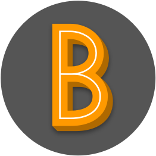

<!-- Capture and store a URL -->
{% capture location %}{{ page.url | split:'/' }}{% endcapture %}
<nav class="navbar navbar-default">
  <div class="container">
    <!-- Brand and toggle get grouped for better mobile nav -->
    <div class="navbar-header">
      <button type="button" class="navbar-toggle collapsed" data-toggle="collapse" data-target="#bs-example-navbar-collapse-1" aria-expanded="false">
        <span class="sr-only">Toggle navigation</span>
        <span class="icon-bar"></span>
        <span class="icon-bar"></span>
        <span class="icon-bar"></span>
      </button>
      <a class="navbar-brand" href="/"> <span>Designer &amp; Illustrator</span></a>
    </div>
    <!-- Collect the nav links, forms, and other content for toggling -->
    <div class="collapse navbar-collapse" id="bs-example-navbar-collapse-1">
      <ul class="nav navbar-nav navbar-right">
        <li><a href="/">Work</a></li>
        {% for my_page in site.pages %}
          {% if my_page.menu == 'main' %}
            <!-- Compare the page title to the URL -->
            {% assign current = page.title | downcase %}

            {% if my_page.title %}
              <li><a {% if location == current %} class="nav-current page-link" {% else %}  class="page-link" {% endif %} href="{{ my_page.url | prepend: site.baseurl }}">{{ my_page.title }}</a></li>
            {% endif %}
          {% endif %}
        {% endfor %}
      </ul>
    </div><!-- /.navbar-collapse -->
  </div><!-- /.container -->
</nav>
